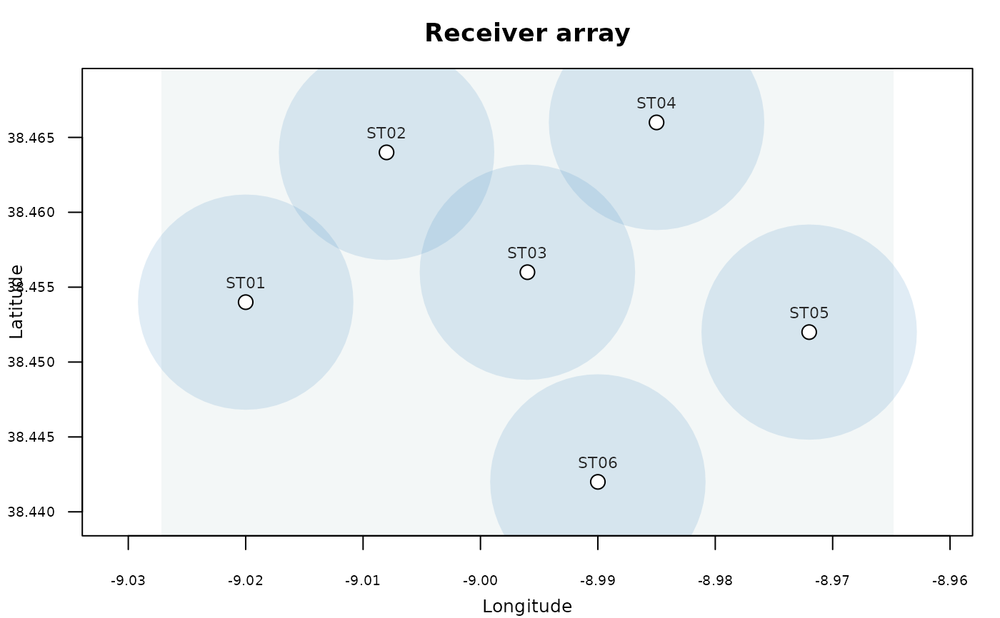
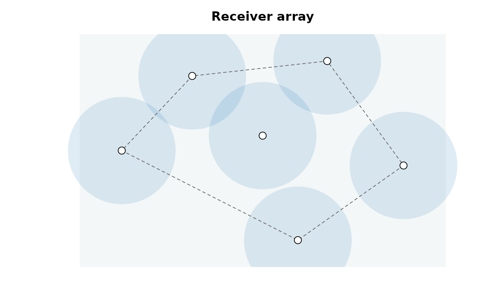

Draws the spatial configuration of a receiver array from a deployment log: one point per station, optionally over a coastline and/or background raster (e.g. bathymetry), with a metric scale bar. It is a pre-analysis quality-control tool - use it to inspect the array layout, spot implausible receiver coordinates, and judge spacing and overall coverage before running any downstream analysis.
Semi-transparent circles of a user-defined radius (detection.range) can be drawn around each
receiver to give a quick visual sense of nominal coverage and potential detection gaps, and the
array's convex hull can be outlined as a footprint. Stations can be coloured by any metadata column
(color.by) or by their deployment status at a chosen date (status.at), and - if a detection
dataset is supplied - stations that never logged a detection are highlighted.
This is the spatial companion to checkDeployments (numeric QC) and
plotDeployments (temporal coverage), and follows the same mapping conventions as
plotMovements and plotMaps.
Usage
plotArray(
deployments,
deployment.station.col = "station",
deployment.lon.col = "lon",
deployment.lat.col = "lat",
deployment.deploy.col = "deploy",
deployment.recover.col = "recover",
detections = NULL,
color.by = NULL,
status.at = NULL,
detection.range = NULL,
range.color = NULL,
range.alpha = 0.15,
range.border = NA,
hull = FALSE,
hull.color = "grey40",
hull.lty = 2,
hull.lwd = 1,
label = FALSE,
label.cex = 0.7,
label.color = "grey15",
label.wrap = FALSE,
pch = 21,
pt.cex = 1.4,
pt.color = "black",
pt.bg = "white",
pt.lwd = 1,
land.shape = NULL,
coastline = getOption("moby.coastline", TRUE),
land.color = "gray50",
epsg.code = NULL,
background.layer = NULL,
background.color = "#F3F7F7",
background.pal = NULL,
scale.km = NULL,
scale.pos = "bottomright",
scale.inset = 0.05,
scale.height = 1.5,
scale.color = "black",
extent.factor = 1.15,
legend = TRUE,
main = NULL,
cex = 1,
file = NULL,
width = NULL,
height = NULL,
res = 300,
verbose = getOption("moby.verbose", TRUE)
)Arguments
- deployments
A receiver-deployment log (a data frame), as produced by
importDeployments- one row per deployment, with at least the station and coordinate columns. Multiple rows per station (repeated servicing) are reduced to one point per station.- deployment.station.col, deployment.lon.col, deployment.lat.col
Names of the station, longitude and latitude columns in the receiver-deployment log (
deployments). Default to the canonical"station"/"lon"/"lat"produced byimportDeployments; set them when a hand-made log uses other names (e.g.deployment.lon.col = "Longitude"). Thedeployment.prefix marks these as deployment-log columns, keeping them distinct from the bare*.colarguments, which always refer to the detection dataset. Thereceivercolumn is the canonical join key and is always taken as-is.- deployment.deploy.col, deployment.recover.col
Names of the deployment and recovery date-time columns in the receiver-deployment log (
deployments). Default to the canonical"deploy"/"recover"produced byimportDeployments; set them when a hand-made log uses other names (e.g.deployment.deploy.col = "deploy_date"). Thedeployment.prefix marks these as deployment-log columns, keeping them distinct from the bare*.colarguments, which always refer to the detection dataset.- detections
Optional. A detection dataset (data frame or
mobyData). When supplied, stations with zero detections are highlighted and counted - a quick check for dead receivers or coverage gaps. The detection station column is taken from the dataset'smobyDatametadata when present, otherwise from the canonical"station".- color.by
Optional. Name of a
deploymentscolumn used to colour the stations (e.g. habitat, receiver model); a colourblind-safe Okabe-Ito palette and a legend are added. Takes precedence overstatus.at.- status.at
Optional. A single date; each station is classified and coloured as
"active","recovered"or"not yet deployed"at that instant, from the deployment/recovery dates (a station is active whiledeploy <= status.at < recover). Character/Dateinput is interpreted in the data's timezone (not the session's) for reproducibility.- detection.range
Optional. Nominal detection radius in metres, drawn as a semi-transparent circle around each receiver: a single value (applied to all stations), a numeric vector named by station, or the name of a
deploymentscolumn holding a per-receiver radius. Stations with a missing (NA) or zero radius get no circle. This is a visual aid for coverage assessment, NOT a modelled detection probability.- range.color
Fill colour of the detection-range circles. If NULL, a muted blue is used.
- range.alpha
Opacity of the range circles, from 0 (transparent) to 1 (opaque). Defaults to 0.15.
- range.border
Border colour of the range circles. Defaults to NA (no border).
- hull
Logical. If TRUE, outline the convex hull of the stations (the array footprint). Defaults to FALSE.
- hull.color, hull.lty, hull.lwd
Colour, line type and width of the hull outline.
- label
Draw station labels:
FALSE(default) none,TRUEthe station name, or the name of adeploymentscolumn to label by.- label.cex, label.color
Size and colour of the station labels.
- label.wrap
Logical. If TRUE, wrap multi-word labels onto separate lines. Defaults to FALSE.
- pch
Plotting symbol for the stations (a fillable symbol such as 21-25 uses
pt.bg). Defaults to 21.- pt.cex, pt.color, pt.bg, pt.lwd
Size, border colour, fill colour and border width of the station symbols.
pt.bgis overridden whencolor.by/status.atis used.- land.shape
Optional. An
sfobject with coastlines/landmasses, drawn underneath the array.- coastline
When the map is projected (an
epsg.code,land.shapeorbackground.layeris given) and noland.shapeis supplied, draw a default coastline for the extent.TRUEauto-picks a scale; a string forces anrnaturalearthscale;FALSEdraws none. Defaults togetOption("moby.coastline", TRUE). Requires the (Suggested)rnaturalearth(withrnaturalearthdata) ormapspackage.- land.color
Colour of land areas. Defaults to "gray50".
- epsg.code
Optional. A projected coordinate reference system (numeric EPSG code or
crsobject, in metre units) used to project the coordinates and map layers. Required for the scale bar; when omitted (and no map layer is supplied) the array is drawn in geographic (longitude/latitude) space with coordinate axes.- background.layer
Optional. A projected raster displayed in the background (e.g. bathymetry).
- background.color
Solid colour for the plot background when no
background.layeris supplied. Defaults to "#F3F7F7".- background.pal
Colour palette for the
background.layerraster. If NULL, a muted colourblind-safe viridis palette is used.- scale.km
Length of the scale bar, in kilometres. If NULL, chosen automatically. Projected maps only.
- scale.pos
Position of the scale bar (a keyword such as "bottomright"). Defaults to "bottomright".
- scale.inset
Inset of the scale bar from the plot edges. A single value or a length-2 (x, y) vector. Defaults to 0.05.
- scale.height
Thickness of the scale bar. Defaults to 1.5.
- scale.color
Colour of the scale-bar labels. Defaults to "black".
- extent.factor
Numeric factor to expand the plotting region around the stations. A value of 1 keeps the bounding box; values > 1 add a margin. Defaults to 1.15.
- legend
Logical. Draw a legend when
color.by/status.at/detectionsis used. Defaults to TRUE.- main
Optional title. If NULL, "Receiver array" is used; FALSE omits it.
- cex
Global expansion factor scaling every text element. Defaults to 1.
- file
Optional output file. If
NULL(the default), the figure is drawn on the current graphics device - the usual interactive behaviour. If a file path is supplied, moby opens a graphics device chosen from the file extension (.pdf,.svg,.png,.jpg/.jpeg,.tif/.tiffor.bmp), draws the figure to it, and closes the device automatically (also if an error occurs). For multi-page or batch workflows, keepfile = NULLand manage the device yourself (e.g.pdf(...); plot...(); dev.off()).- width, height
Output size in inches. Used only when
fileis supplied. IfNULL(default), a size is derived from the figure's structure (e.g. the number of individuals or panels). These defaults are sensible starting points, not guarantees: dense or unusual figures may still need you to setwidth/heightexplicitly. The two can be set independently.- res
Resolution in pixels per inch, for raster formats only (
.png,.jpg,.tif,.bmp); ignored for vector formats (.pdf,.svg). Used only whenfileis supplied. Defaults to 300.- verbose
Logical; print the array summary to the console. Defaults to
getOption("moby.verbose", TRUE).
Value
Invisibly, a data frame of the plotted stations (station, receiver count, coordinates, and -
when requested - the color.by value, deployment status and detection flag). Called mainly for its
side effect (the array map).
Examples
# geographic quick look (no projection needed), with 800 m nominal detection ranges
plotArray(rays_deployments, detection.range = 800, label = TRUE)

#>
#> Receiver array
#> ------------------------------------------------------
#> Stations: 6 (6 receivers)
#> Projection: geographic (lon/lat)
#> Spacing (NN): median 1.5 km (range 1.4 km-1.9 km)
#> Detection range: 800 m
#> ------------------------------------------------------
# \donttest{
# projected map with an automatic coastline and the array footprint
plotArray(rays_deployments, epsg.code = 32629, detection.range = 800,
hull = TRUE, coastline = FALSE)

#>
#> Receiver array
#> ------------------------------------------------------
#> Stations: 6 (6 receivers)
#> Projection: projected (EPSG:32629)
#> Spacing (NN): median 1.5 km (range 1.4 km-1.9 km)
#> Detection range: 800 m
#> Scale bar: 2 km
#> ------------------------------------------------------
# }